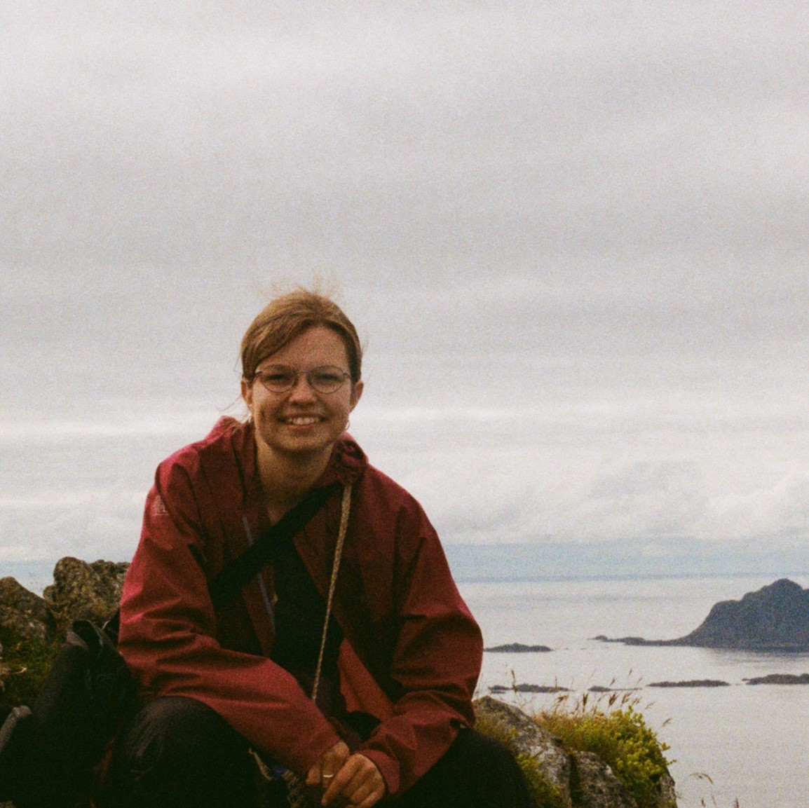

Isabella Jakobsen Szállás is a writer and literary translator. Her translations have appeared in Hungarian Literature Online and have been shortlisted for appearance in Asymptote. Isabella studied on the Hungarian Literary Translation postgraduate programme at the Balassi Institute in Budapest, where she is being mentored by translator Anna Bentley. She studied classical languages and literature at UCL, with a Dean's List awarded dissertation about Miklós Radnóti’s translations from Latin. She has translated works by István Kormos, Péter Kántor, Péter Hajnóczy, Panni Puskás, Balázs Mohácsi, and Péter Görcsi.